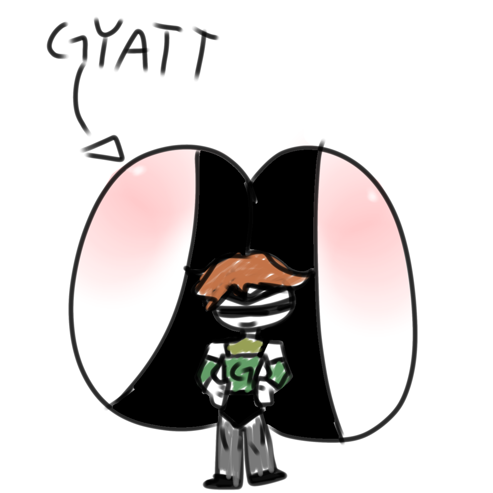

story was made by yours truly: zamie
Gyatt Slammer..
"Whenever i walk down the hallway my gyatt would always bounce to the floor making a loud bouncing noise"
"I've always hated that, its not my fault my gyatt is so big..."
"People would always make fun of my gyatt.. i just thought they were jealous"
"But I don't think they were jealous...."
"YO ITS THE GYATT FREAKK HWAHHAHAAHAHA"
"I couldn't handle it anymore.."
"shut up.. Shut Up.. SHUT UP.. SHUT UP!!!"
"I slammed him against the lockers with my gyatt"
"Everyone looked at me with shock, and that's where it all happened"
"I ran away cause the police were looking for me"
"So i decided... To be gyatt Slammer"

"After becoming a villain... I WAS UNSTOPPABLE!!"
"I WAS SLAMMING HEROES WITH MY GYATT!!"
"Bouncing around everywhere with my gyatt and crushing people like HOW THEY CRUSHED MY DREAMS!!"
"my outfit was the coolest villain outfit ever.."
"It was a black suit with a hole at the back for my gyatt cause my gyatt was too big and a mask like robin"
"Until... Batman came"
"Stop this you gyatt slammer"
"SHUT UP BATMAN, what are you gonna do anyway?? SUCK MY GYATT WITH UR BAT TEETH???"
"Don't give me ideas gyatt boy"
"I started bouncing on my gyatt, trying to crush him"
"But i bounced up too high and landed in ohio..."
"Where all the evil skibidi toilets live.."
"And my gyatt hurts too, so i guess i gotta stay in ohio for a while..."
some bonus stories made by the same person(im gonna cry)
He gyatt heartbroken
"No, please don't leave me...."
As he holds her hand begging her not to go
"Im sorry gerald.... Y-you don't have level 58 gyatt!!!!"
He stood frozen while staring at her
"*W-what do you m-mean..??? I-I-I-I-I-I-I DO GOT GYATT..!?!?! WHAT DO YOU MEAN..??"
As he raises his voice she answered
"Y-your just ..... 46 gyatt...."
Gyattlicious
"I own a very popular restaurant known for its meatballs"
"People loved how juicy and chewy the meatballs are"
"Im glad they dont know what they're made of cause.."
"Its made out of level 86 gyatt of a dude..."
"His gyatt was so big so i HAD to get his gyatt"
"It was the way the gyatt jiggles when he walks..."
"When my level 86 gyatt supply runs out, i have to hunt again, but this time... Im searching for a level 95 gyatt...
I gyatt in love
"In my life i never felt love, I don't even know what it feels like..."
"Until i went into high school.."
"His gyatt was so big, it caught my eyes.."
"I-I-I-I-I-I-I CAN'T BELIEVE THIS..!?!? A-AM I FALLING I-INLOVE???"
"His gyatt was soo dreamy, the way it was jiggling like jelly made me fall in love even more"
"Then this happened"
"Hey, i saw that u were looking at my gyatt alot"
"I panicked"
"O-OH UHH HMMM UHH N-NOPE NOT AT ALL..!!!"
"Gosh that was so embarrassing"
"Hey don't be embarrassed, anyways my name is schmetterling"
Oh.. m-my name is vajinya.."
"Wanna walk together after school, vajinya?"
"O-oh sure!"
"Years later we dated then we got married and had a child together named poosy"